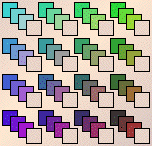
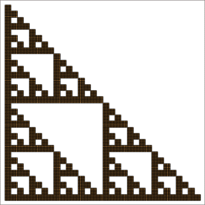

|  |  |
| These forbidden triples produce a standard gasket. Let's see how. | |||
| |||
| To produce this gasket with forbidden pairs, we need | |||
| From the software description, we see that to forbid
all triples | |||
| Setting to 0 all the entries of any other three faces produces each of the other three gasket orientations. |
Return to Gaskets.